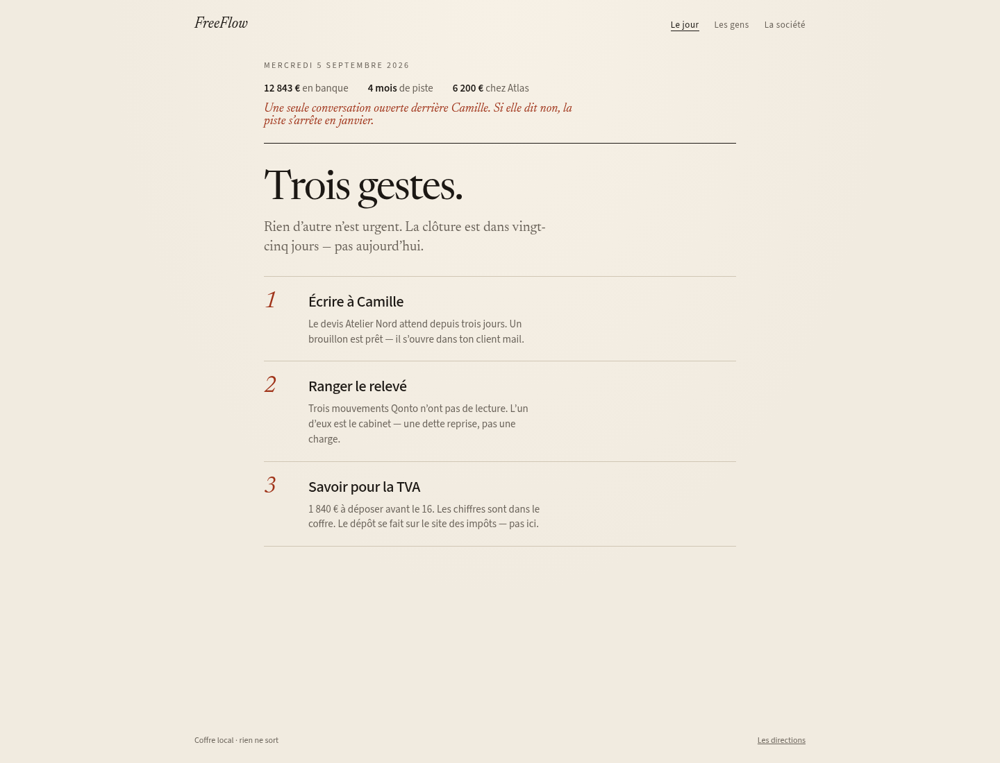
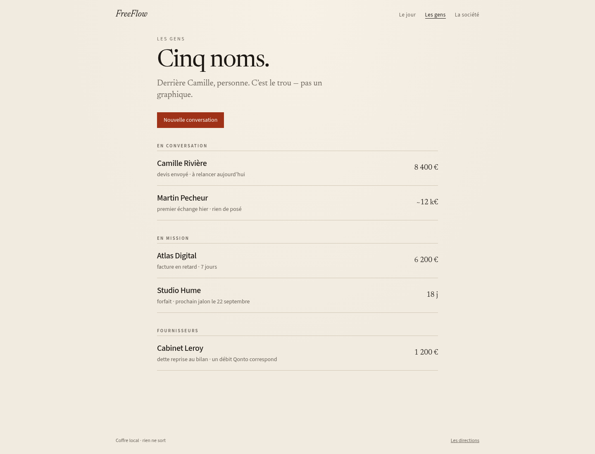
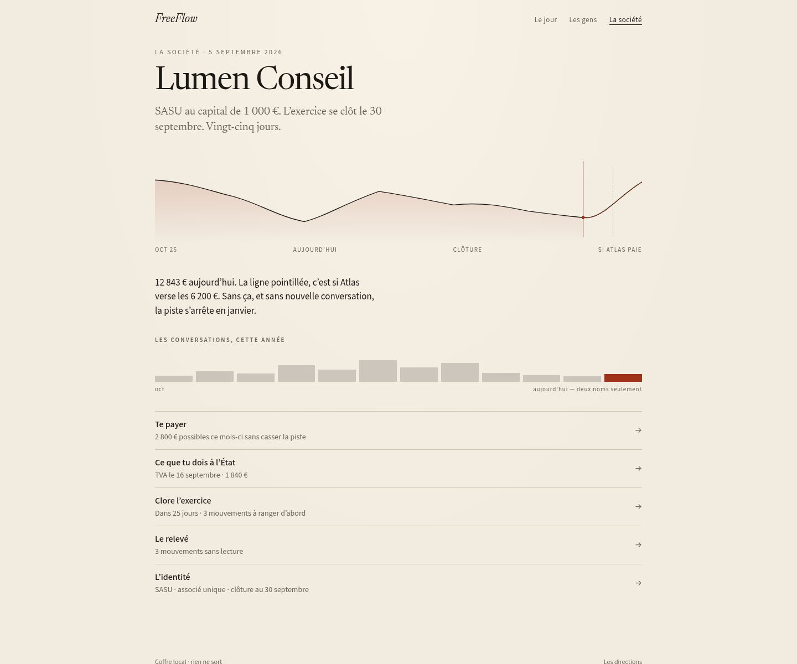

Le jour
La date, la banque, les gestes.
Alpha · L’atelier de l’indépendant
Quoi faire aujourd’hui, si l’argent tiendra, qui relancer. Sur ta machine. Sans serveur.

La date, la banque, les gestes.
Une liste, un dossier par personne.

Se payer, les impôts, le relevé, clore.

Un fichier sur ta machine. Le code est ouvert, licence PolyForm Shield.
Alpha, Linux, SASU à l’impôt sur les sociétés. Une EURL, une micro, l’impôt sur le revenu, Windows ou un Mac : plus tard. Tu peux t’en servir pour ta propre activité ; tu ne peux pas vendre Griffe ni le proposer en service hébergé sans accord.